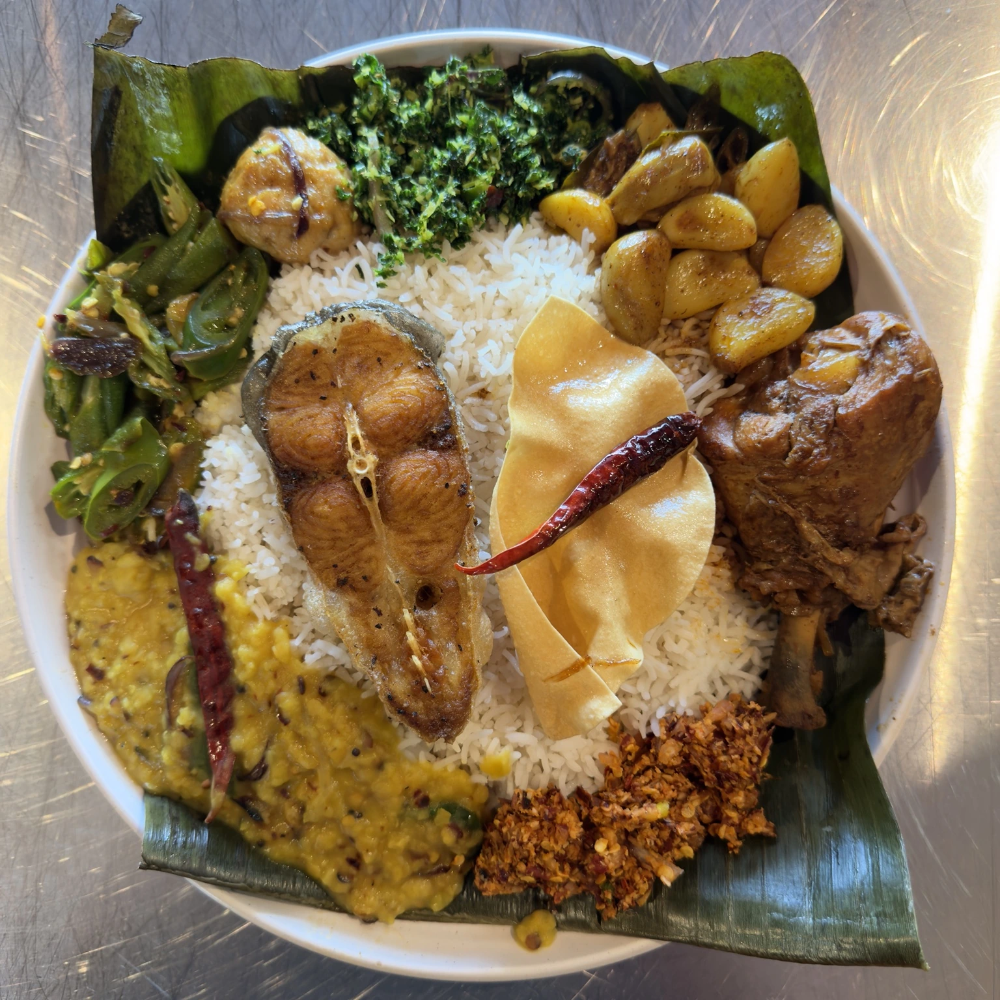
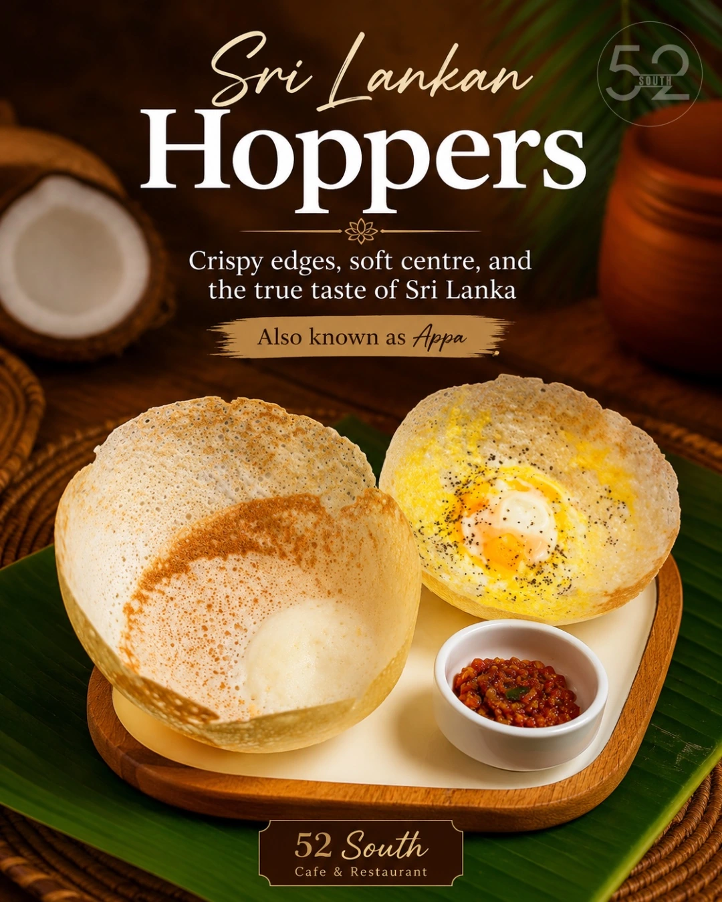
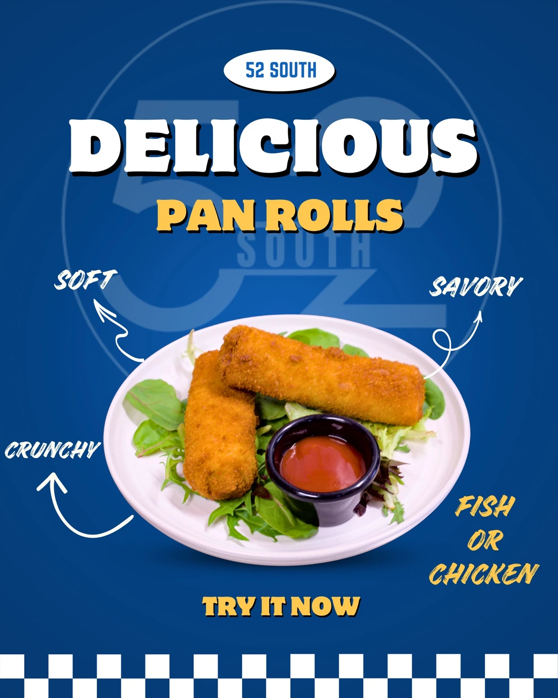
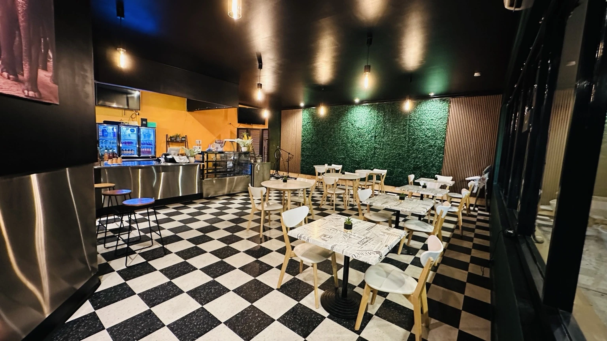

G★★★★★
“Just moved from Melbourne and was looking for a place to have some authentic food, it was 10/10 and the service was truly impressive.”
Authentic Sri Lankan flavours, comforting café favourites and warm hospitality in Rosetta.
Authentic food prepared at 52 South. Discover our Sri Lankan restaurant in Hobart and learn more about our rice and curry, hoppers, kottu and short eats.

Homestyle Sri Lankan flavours with rotating vegetable and meat curries.

Hoppers available Fridays and Saturdays. Reservation preferred.

Fresh savoury bites for takeaway, gatherings and catering.
See our latest food, specials and moments from the restaurant on TikTok.
TikTok content loads directly from the official 52 South profile.
Real feedback from guests who have dined with us.
“Just moved from Melbourne and was looking for a place to have some authentic food, it was 10/10 and the service was truly impressive.”
“Incredible food across the menu, everything we tried was absolutely delicious. Can’t rate this place more highly! We will be back!”
“The experience was amazing, and the food was absolutely delicious. Authentic Sri Lankan cuisine and fried rice — everything was full of flavour and so satisfying!”
“Tasty food, nice options for Indians and Sri Lankans. We specifically liked their fried rice varieties.”
“Delicious food, friendly service and great prices.”

A welcoming space for birthdays, family gatherings and private celebrations.